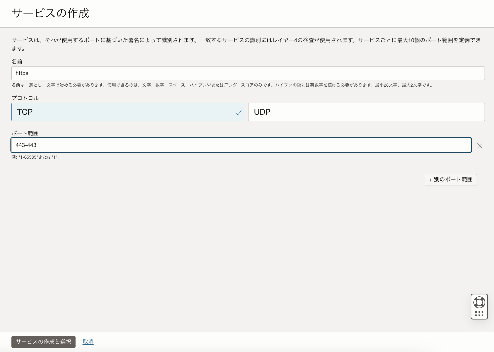
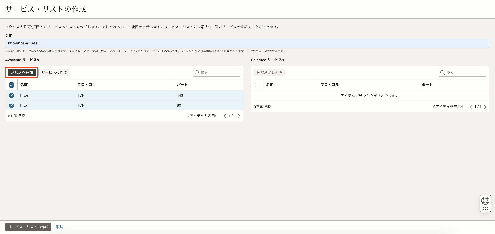
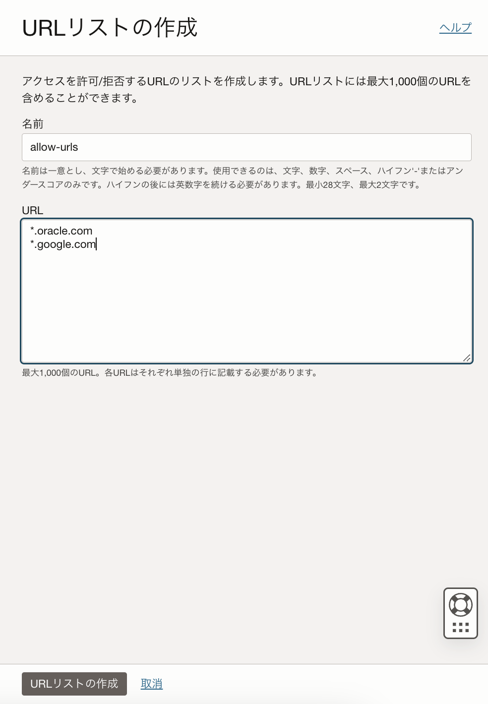
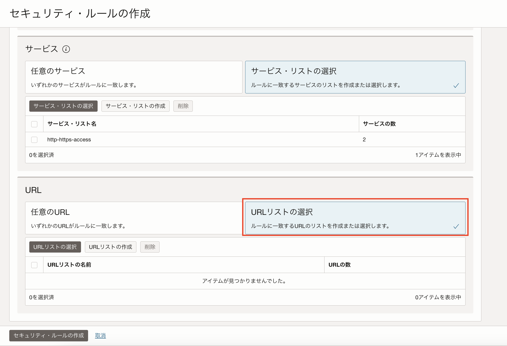
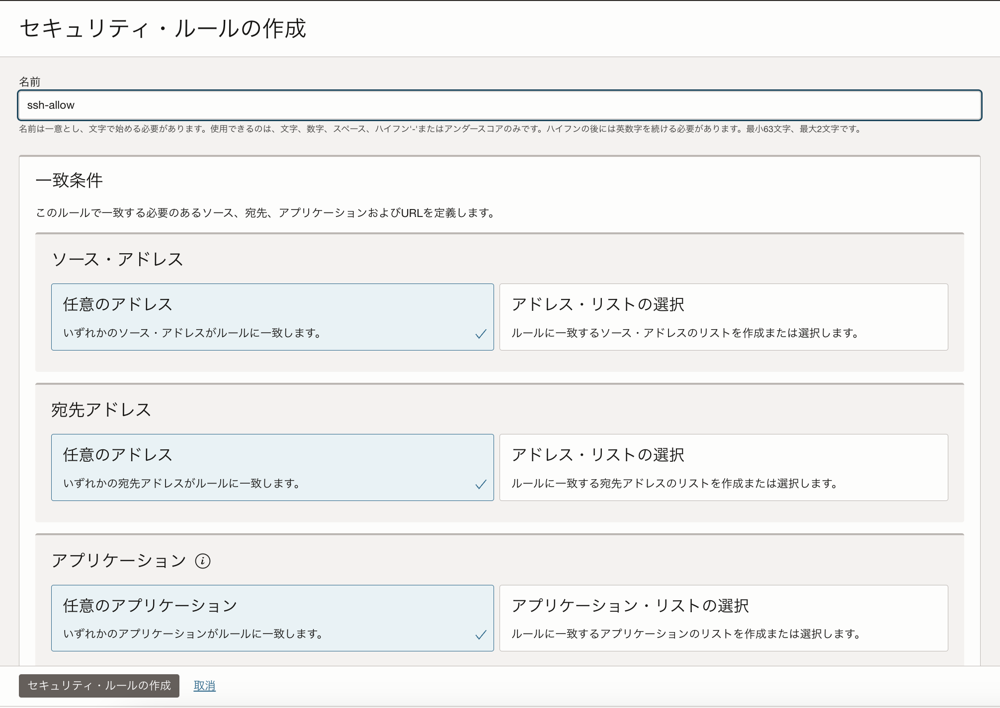
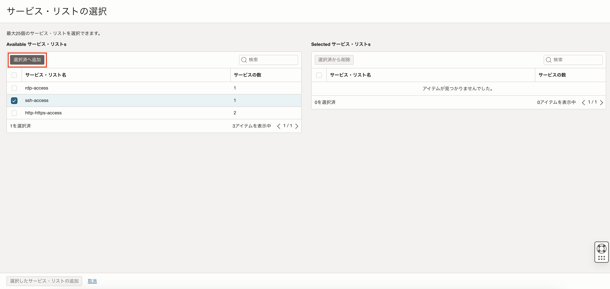
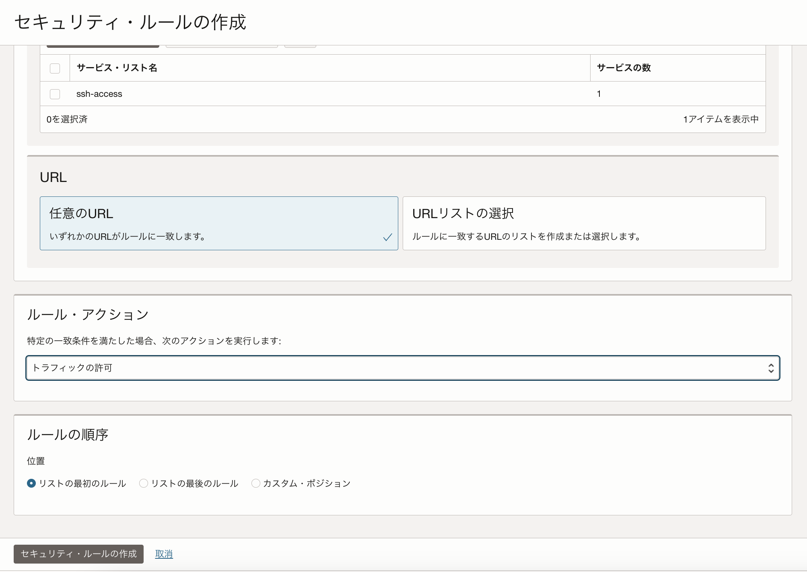
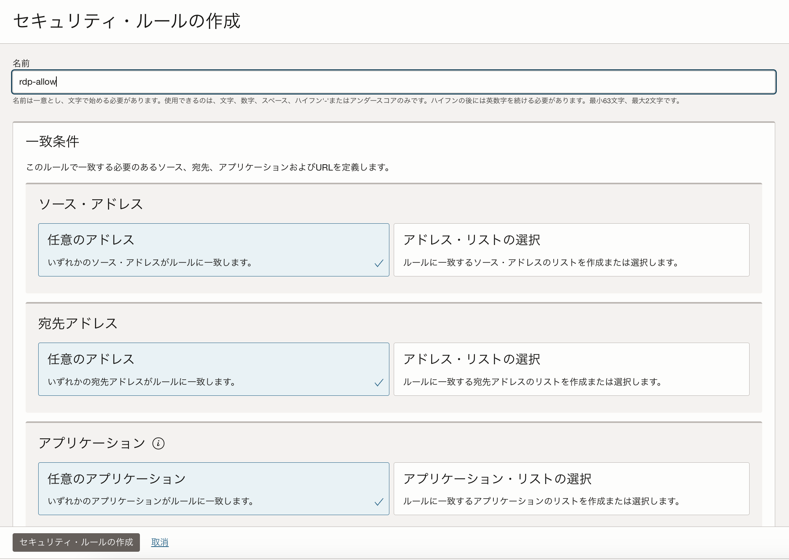
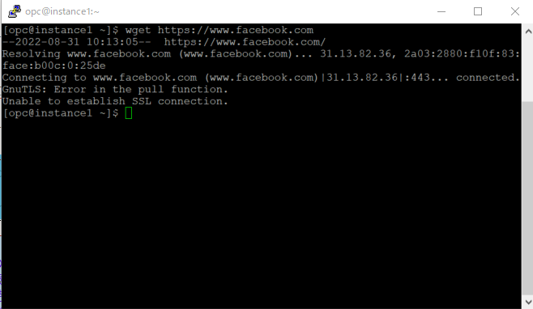
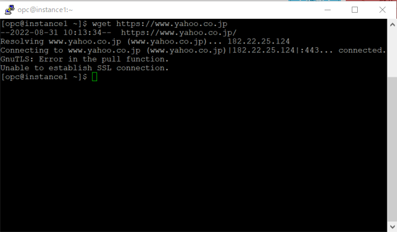

パロアルトネットワークスの次世代ファイアウォール技術を基に構築されたOCIクラウドネイティブのマネージド・ファイアウォール「OCI Network Firewall」が2022年7月にリリースされました。
「OCI Network Firewall」はURLフィルタリングやTSL/SSL検査などの機能を提供します。
本チュートリアルではNetwork Firewallポリシーを設定し、動作の検証を行います。
具体的にはポート番号とURLによりアクセスを制御するルールを作成し、その後、コンピュートインスタンスからネットワーク・ファイアウォール・ポリシーで設定したURLへのアクセスが許可/拒否されることを確認します。
所要時間 :
- 約30分
前提条件 :
- ユーザーに必要なIAMポリシーが割り当てられていること。ポリシーの詳細はドキュメントを参照ください。
- OCIチュートリアル「OCI Network Firewallを構築する」にて、Network Firewallが動作できる環境が作成されていること。
注意 :
- ※チュートリアル内の画面ショットについてはOracle Cloud Infrastructureの現在のコンソール画面と異なっている場合があります。
はじめに
Network Firewallがネットワーク・トラフィックを検証し許可/拒否するルールをまとめた「ファイアーウォール・ポリシー」を作成する必要があります。
各Network Firewallは必ず1つのファイアーウォール・ポリシーに紐づける必要がありますが、1つのファイアーウォール・ポリシーを複数のNetwork Firewallに紐づけることができます。
ファイアーウォール・ポリシーは復号化ルールなどパケットを検査するルール「ファイアウォール・ポリシー・ルール」で構成されます。該当ルールがない場合、トラフィックは拒否されるため、通信を行うには最低1つのルールの設定を行う必要があります。
以下、簡単に各項目について説明します。
-
サービス・リスト :
Network Firewallポリシーのルールの作成時に使用できるTCPまたはUDPのポート番号のリストを作成することができます。 -
アプリケーション・リスト :
Network Firewallポリシーのルールの作成時に使用できるICMPまたはICMPv6コードのリストを作成することができます。 -
URLリスト :
Network Firewallポリシーのルールの作成時に使用できるURLのリストを作成することができます。 -
アドレス・リスト :
Network Firewallポリシーのルールの作成時に使用するIPv4, IPv6またはFQDNのリストを作成することができます。 -
セキュリティ・ルール :
Network Firewallポリシーにて作成したアプリケーション・リスト、サービス・リスト、URLリスト、アドレス・リストを基にアクセスを許可/拒否、または脅威検知/脅威防御するよう設定することが可能です。
本チュートリアルではポート番号22, 3389, 443のアクセスと、URL「www.google.com」「www.google.com」のアクセスを許可します。一方「www.yahoo.co.jp」「www.facebook.com」のアクセスを拒否し、実際にコンピュートインスタンスから各URLへアクセスが許可/拒否されることを確認します。
1. ファイアウォール・ポリシーの設定
OCIコンソール画面左上のメニューボタン → アイデンティティとセキュリティ → ファイアウォール → ネットワーク・ファイアウォール・ポリシー をクリックし、作成したポリシーを選択します。 表示されたポリシーの作成画面にて任意のポリシー名を入力し、「ポリシーの作成」ボタンをクリックします。

ポリシーを選択すると、ポリシーの詳細画面が表示されます。

1-1. サービス・リストの作成
アクセスを許可するポート番号を「サービス」として作成し、「サービス・リスト」に追加します。 手順2-1で作成したポリシー詳細画面左下のポリシー・リソースから「サービス・リスト」を選択し、「サービス・リストの作成」ボタンをクリックします。
「サービス・リストの作成」画面にて、任意のサービス・リスト名を入力します。
※例）「http-https-access」
サービス・リスト名を入力したら、「サービスの作成」ボタンをクリックします。
「サービスの作成」画面にて、以下を入力し、「Create and select service」を選択します。
名前- httpプロトコル- TCPポート範囲- 80-80

同じように、以下httpsの443ポートをサービスとして、サービス・リストに追加します。
名前- httpsプロトコル- TCPポート範囲- 443-443

httpとhttpsのサービスのボックスにチェックを入れ、「選択済へ追加」ボタンをクリックします。
サービス・リストにサービスを追加したら画面下の「サービス・リストの作成」ボタンをクリックします。

同じ手順でsshアクセスに使用するポート22番とリモートデスクトップ接続に使用するポート3389番をサービスとして作成し、それぞれをサービス・リストに追加します。
サービス・リスト名- ssh-accessサービス名- sshプロトコル- TCPポート範囲- 22

サービス・リスト名- rdp-accessサービス名- rdpプロトコル- TCPポート範囲- 3389-3389

以上の手順でサービス・リストの作成は完了です。
1-2. URLリストの作成
続いて、アクセスを許可するURLのリストと、アクセスを拒否するURLのリストを作成します。
ポリシー詳細画面左下のポリシー・リソースから「URLリスト」を選択し、「URLリストの作成」ボタンをクリックします。
表示された「URLリストの作成」画面にて以下を入力し、アクセスを許可するURLリストを追加します。

本チュートリアルでは検証としてOracleとGoogleのドメインを許可リストに追加します。
名前- allow-urlsプロトコル- *.oracle.com, *.google.com URLを追加したら、画面下の「URLリストの作成」ボタンをクリックします。

同じ手順でアクセスを拒否するURLリストも作成します。
本チュートリアルでは検証として、FacebookとYahoo! Japanのドメインを拒否リストに追加します。
名前- deny-urlsプロトコル- *.facebook.com, *.yahoo.co.jp

以上の手順でURLリストの作成は完了です。
1-3. セキュリティ・ルールの作成
セキュリティ・ルールでは、以下4種類のルールを作成します。
- 指定したURLリストへのインターネット経由のアクセスを許可するルール
- 指定したURLリストへのインターネット経由のアクセスを拒否するルール
- SSHアクセスを許可するルール
- リモート・デスクトップ接続を許可するルール
まずは指定したURLへのインターネットを経由したアクセスを許可ルールを作成します。
ポリシー詳細画面左下のポリシー・リソースから「セキュリティ・ルール」を選択し、「セキュリティ・ルールの作成」ボタンをクリックします。

セキュリティ・ルールの作成画面にてセキュリティ・ルール名を入力します。
例）urls-allow-rule

一致条件の項目にて、「ソースIPアドレス」、「宛先IPアドレス」、「アプリケーション」はすべて「任意」を選択します。
「サービス」にて「サービス・リストの選択」をクリックし、「サービス・リストの選択」ボタンをもう一度クリックします。

「サービス・リストの選択」画面にて、手順1-1で作成したポート80,443番を追加したサービス・リストにチェックをいれ、「選択済へ追加」ボタンをクリックします。

選択されたサービス・リストの欄に表示されていることを確認したら、画面下の「選択したサービス・リストの追加」ボタンをクリックします。

続いて、アクセスを許可するURLを指定します。
URLsの項目にて、「URLリストの選択」をクリックし、再度「URLリストの選択」ボタンをクリックします。

URLリストの選択画面にて、アクセスを許可するURLを追加したリストをチェックし、「選択済へ追加」ボタンをクリックします。

選択されたURLリストの欄に表示されていることを確認したら、画面下の「選択したURLリストの追加」ボタンをクリックします。

続いて、セキュリティ・ルールの作成画面の「ルール・アクション」の項目にて「トラフィックの許可」を選択し、「セキュリティ・ルールの作成」ボタンをクリックします。

以上で、指定したURLへのインターネットを経由したアクセスを許可するルールを作成する手順は完了です。
続いて、指定したURLへのインターネットを経由したアクセスを拒否するルールを作成します。
「セキュリティ・ルールの作成」ボタンをクリックし、セキュリティ・ルールの作成画面にてセキュリティ・ルール名を入力します。
例）urls-deny-rule
「サービス」にて「サービス・リストの選択」をクリックし、「サービス・リストの選択」ボタンをもう一度クリックします。
「サービス・リストの選択」画面にて、手順1-1で作成したポート80,443番を追加したサービス・リストにチェックをいれ、「選択済へ追加」ボタンをクリックします。
選択されたサービス・リストの欄に表示されていることを確認したら、画面下の「選択したサービス・リストの追加」ボタンをクリックします。
続いて、アクセスを拒否するURLを指定します。
URLsの項目にて、「URLリストの選択」をクリックし、再度「URLリストの選択」ボタンをクリックします。
URLリストの選択画面にて、アクセスを拒否するURLを追加したリストをチェックし、「選択済へ追加」ボタンをクリックします。

選択されたURLリストの欄に表示されていることを確認したら、画面下の「選択したURLリストの追加」ボタンをクリックします。

続いて、セキュリティ・ルールの作成画面の「ルール・アクション」の項目にて「トラフィックの拒否」を選択し、「セキュリティ・ルールの作成」ボタンをクリックします。

以上で、指定したURLへのインターネットを経由したアクセスを拒否するルールを作成する手順は完了です。
続いて、SSHアクセスを許可するルールを作成します。
「セキュリティ・ルールの作成」ボタンをクリックし、セキュリティ・ルールの作成画面にてセキュリティ・ルール名を入力します。
例）ssh-allow

一致条件の項目にて、「ソースアドレス」、「宛先アドレス」、「アプリケーション」、「URL」はすべて「任意」を選択します。
「サービス」にて「サービス・リストの選択」をクリックし、「サービス・リストの選択」ボタンをもう一度クリックします。
「サービス・リストの選択」画面にて、手順1-1で作成したポート22番を追加したサービス・リストにチェックをいれ、「選択済へ追加」ボタンをクリックします。

選択されたサービス・リストの欄に表示されていることを確認したら、画面下の「選択したサービス・リストの追加」ボタンをクリックします。

「ルール・アクション」の項目にて「トラフィックの許可」を選択し、「セキュリティ・ルールの作成」ボタンをクリックします。

以上の手順で、SSHアクセスを許可するルールを作成する手順は完了です。
最後にリモート・デスクトップ接続を許可するルールを作成します。
「セキュリティ・ルールの作成」ボタンをクリックし、セキュリティ・ルールの作成画面にてセキュリティ・ルール名を入力します。
例）rdp-allow

一致条件の項目にて、「ソースアドレス」、「宛先アドレス」、「アプリケーション」、「URL」はすべて「任意」を選択します。
「サービス」にて「サービス・リストの選択」をクリックし、「サービス・リストの選択」ボタンをもう一度クリックします。
「サービス・リストの選択」画面にて、手順1-1で作成したポート3389番を追加したサービス・リストにチェックをいれ、「選択済へ追加」ボタンをクリックします。

選択されたサービス・リストの欄に表示されていることを確認したら、画面下の「選択したサービス・リストの追加」ボタンをクリックします。

「ルール・アクション」の項目にて「トラフィックの許可」を選択し、「セキュリティ・ルールの作成」ボタンをクリックします。

以上で、リモート・デスクトップ接続を許可するルールの作成は終了です。
(補足)SSLについて
本チュートリアルでは設定しませんが、ネットワーク・ファイアウォール・ポリシーの「マップされたシークレット」、「復号化プロファイル」にて証明書関連の設定を行うことが可能です。 クライアントとサーバー間の通信がSSLによって暗号化されている場合、本機能を利用することでHTTPSトラフィックを復号化し、通信の内容を検査することが可能です。
「マップされたシークレット」とは、OCI Vaultサービスで設定された証明書認証のことを指します。「マップされたシークレット」は「SSL転送プロキシ」または「SSLインバウンド検査」を使用してSSL/TLSトラフィックを復号化、検査するために使用されます。「マップされたシークレット」を作成するには、OCI Vaultサービスでシークレット情報が作成されている必要があります。 証明書認証の設定についてはドキュメントを参照ください。
「復号化プロファイル」では、「SSL転送プロキシ」または「SSLインバウンド検証」の設定を行うことができます。 「SSL転送プロキシ」では、Network Firewallが内部クライアントとサーバーの仲介サーバーとなり、内部クライアントと外部サーバーそれぞれと通信をします。 「SSLインバウンド検査」では外からのインバウンド通信を復号化し、内容を検査します。
「SSL転送プロキシ」は内部ユーザーからNetwork Firewallを経由してインターネットへ出るSSL/TLSトラフィックを復号化し、以下のような条件を検知しアクションを取ることが可能です。
- 期限切れ証明書をブロック
- 信頼されていない発行者をブロック
- ブロック・タイムアウト証明書
- サポートされていない暗号スイートをブロック
- 証明書拡張の制限
- 不明な証明書をブロック
- 処理リソースがない場合はブロック
「SSLインバウンド検査」は登録されたサーバーの証明書、秘密鍵を使用して外部のクライアントからNetwork Firewallに保護されたサーバーへのインバウンドのSSL/TLS通信を復号化し、以下の条件を検知してアクションを取ることが可能です。
- サポートされていないSSLバージョンのセッションをブロック
- サポートされていないSSL暗号スイートのセッションをブロック
- 処理リソースがない場合はブロック
2. OCI Network Firewallの動作確認
Network Firewallの動作を確認します。
Linuxインスタンスの場合は手順2-1に従って動作を確認してください。Windowsインスタンスでも、Powershellを使用して同様に動作を確認することができます。
Windowsのインスタンスの場合は、手順2-2に従ってブラウザで動作を確認することも可能です。
2-1. wgetコマンドでの確認
対象のインスタンスにSSHでアクセスし、OCI Network Firewallの動作を確認します。
OCIコンソール画面左上のメニューボタン → コンピュート → インスタンス → 対象のLinuxのコンピュート・インスタンス名をクリックし、コンピュート・インスタンスのパブリックIPアドレスを確認します。
OCIのシリアルコンソールやPuttyなどのツールでコンピュート・インスタンスにSSHアクセスします。
※本チュートリアルではPuttyを使用してSSHアクセスを実施しています。
OCI Network Firewallの設定で、「*.google.com」と「*.oracle.com」へのアクセスを許可しているので、ターミナルを開き以下コマンドで各ドメインにアクセスできることを確認します。
$wget https://www.oracle.com

$wget https://www.google.com

OCI Network Firewallの設定で、「www.facebook.com」と「www.yahoo.co.jp」へのアクセスを拒否しているので、以下コマンドで各ドメインへのアクセスに失敗することが確認できます。
$wget https://www.facebook.com

$wget https://www.yahoo.co.jp

2-2. Windowsのブラウザから確認
OCIコンソール画面左上のメニューボタン → コンピュート → インスタンス → 対象のWindowsのインスタンス名をクリックし、インスタンスの詳細画面を表示します。 インスタンス詳細画面右上の「インスタンス・アクセス」に記載のある「パブリックIPアドレス」、「ユーザー名」、「初期パスワード」を手元にメモします。

ローカルPC（Windowsの場合）のアプリ「リモートデスクトップ接続」を開き、手順6-2で作成したWindowsのインスタンスのパブリックIPアドレスを入力し、「接続」ボタンをクリックします。

「このリモートコンピューターのIDを識別できません。接続しますか？」というメッセージが表示された場合、「はい」を選択して続行します。
表示されたログイン画面にて、ユーザー名と初期パスワードを入力します。初期パスワードのリセットを促す画面が表示されるので、パスワードをリセットし、Windowsサーバーにログインします。
続いてWindowsのブラウザ「Internet Explorer」を使用するために、ブラウザのセキュリティ機能を無効化します。 Windowsのホーム画面左下のメニューから「Server Manager」を選択します。

表示されたServer Manager左側のメニューから「Local Server」を選択し、「IE Enhanced Security Configuration」の”On”の部分をクリックします。

ポップアップ画面にて、AdministratorsとUsers各設定を”off”にし、「OK」ボタンをクリックします。

続いて、Windowsでブラウザ「Internet Explorer」を開き、googleのホームページにアクセスできることを確認します。
https://www.google.com
一方で、yahooのホームページにはアクセスができないことも確認できます。
https://www.yahoo.co.jp
以上でネットワーク・ファイアウォールの動作確認は終了です。
今回設定した内容の他にも、不正トラフィックの侵入を検知/防止したり、SSL/TLSトラフィックの検査など様々なファイアウォール機能を提供しているので、是非色々な設定を試してみてください。